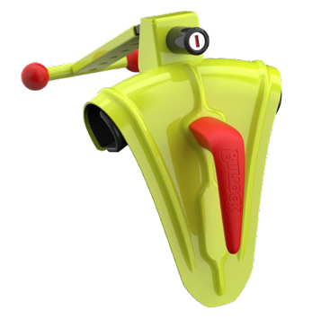
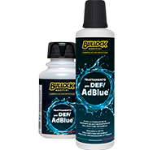
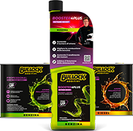

❮ ❯
وشتار (به انگلیسی: Text) (در عربی: اَلْمَتْنْ) در فلسفۀ ادبیات نوشتهای است که قابلیت آن را دارد تا توسط شمار نامحدودی از مخاطبان به گفتار زنده تبدیل شود. به این ترتیب، نوشتار گفتمانی است که با نوشتن تثبیت شدهاست و بیانکننده احساسات، عواطف، کنشها، واکنشها و هر معنای کاملی است که نویسنده، در قالب آن، به مخاطب میرساند؛ و از این رو که میتواند مخاطبانی در بینهایت زمان و مکان داشته باشد، محیرالعقول است. متن، جادوی رسانه است.[۱] نوشتار مجموعهای واقعیات است که به عنوان نشانهها به کار میرود و به قصد انتقال معانی خاص به یک شنونده، در یک بافت معین انتخاب و تنظیم میشود.[۲] یکی از مفاهیمی که در رویکردها و جریانهای نقد و نظریهٔ ادبی بهطور گسترده و فراگیر حضور دارد؛ «نوشتار» و مفاهیم، همبسته و وابسته به آن است. نوشتار در نظریه ادبیT به هرچیزی گفته میشود که بتوان آن را خواند؛ چه کتاب ادبی، دستورالعمل آشپزی یا تبلیغات سطح شهر، طرح بر روی لباس، نوع چینش صندلیها در یک سخنرانی و مانند آن. متن مجموعه منسجمی از نشانههاست که نوعی از پیام آگاهیدهنده را انتقال میدهد. این نشانههای قراردادی به جای این که وجه فیزیکیشان یا نقش میانجیگرانهشان مورد نظر باشد، برحسب محتوای پیامی که انتقال میدهند، بررسی میشود.[۳]
واقعیت یک نوشتار باید قابل درک باشد، خواه به وسیله حواس مانند درک خطوط، اشکال و ایماها و اشارهها یا ادراک پدیدار شناسانه مانند ادراک تصورات ذهنی. این واقعیات قابل ادراک باید به عنوان نشانهها به کار روند، یعنی آنها باید معنادار باشند. این نشانهها باید به گونهای انتخاب و تنظیم شوند که نوشتارنگار (نویسنده و…) بتواند معنای مشخصی را به شنونده در یک بافت معین منتقل سازد.
واقعیت یک نوشتار باید قابل درک باشد، خواه به وسیله حواس مانند درک خطوط، اشکال و ایماها و اشارهها یا ادراک پدیدار شناسانه مانند ادراک تصورات ذهنی. این واقعیات قابل ادراک باید به عنوان نشانهها به کار روند، یعنی آنها باید معنادار باشند. این نشانهها باید به گونهای انتخاب و تنظیم شوند که نوشتارنگار (نویسنده و…) بتواند معنای مشخصی را به شنونده در یک بافت معین منتقل سازد.
واقعیت یک نوشتار باید قابل درک باشد، خواه به وسیله حواس مانند درک خطوط، اشکال و ایماها و اشارهها یا ادراک پدیدار شناسانه مانند ادراک تصورات ذهنی. این واقعیات قابل ادراک باید به عنوان نشانهها به کار روند، یعنی آنها باید معنادار باشند. این نشانهها باید به گونهای انتخاب و تنظیم شوند که نوشتارنگار (نویسنده و…) بتواند معنای مشخصی را به شنونده در یک بافت معین منتقل سازد.